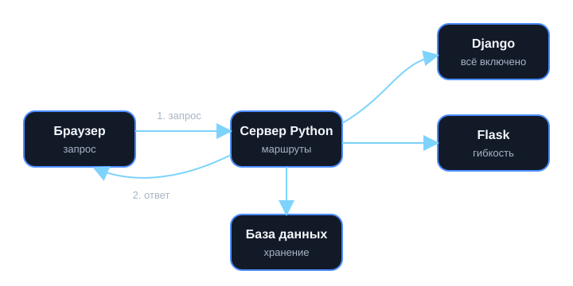

Python • Backend • Django • Flask
01
Серверная логика
02
Маршрутизация
03
Базы данных
04
Выбор фреймворка
Python для веб-разработки
PyWeb Guide — учебный сайт, который помогает студентам понять серверную разработку: запросы, базы данных, фреймворки — и выбрать между Django и Flask для первого проекта.
# app.py
from flask import Flask
app = Flask(__name__)
@app.route("/")
def home():
return "PyWeb Guide 🚀"
# запуск: flask --app app run --debug# myapp/views.py
from django.http import HttpResponse
def home(request):
return HttpResponse("PyWeb Guide 🚀")
# mysite/urls.py
from django.urls import path
from myapp import views
urlpatterns = [path("", views.home)]
# запуск: python manage.py runserverОдна и та же страница на двух фреймворках. Скопируйте код и запустите у себя командой из последней строки.
Что здесь можно изучить
Сайт построен как короткий маршрут: от роли Python в вебе — к конкретным инструментам, коду и практике.
🌐Что такое backend
Серверная часть приложения: принимает запрос, обрабатывает данные и возвращает ответ пользователю.
🧩Что такое Django
Крупный фреймворк с готовыми инструментами «из коробки»: ORM, админ-панель, пользователи.
⚙️Что такое Flask
Лёгкий фреймворк: берёшь только то, что нужно, и сам решаешь, как устроен проект.
🧭Когда что выбирать
Зависит от размера проекта, сроков и опыта: короткий сервис — Flask, большой сайт — Django.
План изучения: дорожная карта новичка
Пять шагов, которые помогают пройти путь от синтаксиса до первого веб-приложения. Отмечайте пройденные шаги — прогресс сохранится в этом браузере.
0 из 5 шагов пройдено
1
Повтори основы Python
Переменные, условия, функции, списки и словари — минимальная база для старта.
2
Пойми, как работает веб
Браузер, сервер, HTTP-запрос, ответ, маршруты и страницы — основная логика веба.
3
Выбери первый фреймворк
Flask — для простого старта, Django — для проектов с админкой и базой данных.
4
Подключи данные
SQLite, ORM, модели и простые запросы — следующий шаг к реальному приложению.
5
Сделай мини-проект
Список задач, блог, портфолио или короткий сервис — практика закрепляет лучше теории. Начните с готовой инструкции: первый проект по шагам.
Карта знаний темы
Схема показывает путь запроса от браузера к серверу и обратно, а дерево ниже — иерархию понятий: Python → backend → Django / Flask → база данных.

-
Python
-
Backend-разработка
- Обработка запросов
- Работа с базой данных
- Формирование ответа
- Маршруты и контроллеры
-
Django
- ORM и админ-панель
- Готовая архитектура
- Быстрый старт для CRUD-проектов
-
Flask
- Минимализм и гибкость
- Расширения по необходимости
- Хорош для небольших API
-
Backend-разработка
Ключевые технологии и понятия
Слова, которые часто встречаются в веб-разработке на Python.
Python
HTTP
HTML
CSS
JavaScript
Django
Flask
SQLite
ORM
REST API
Git
Deploy
Идеи для практики
Если хочется закрепить материал, лучше всего сделать маленький проект.
✅Todo-список
Добавление, удаление и отметка задач — классика для первого CRUD-приложения. Пошаговая инструкция.
📝Мини-блог
Статьи, категории и страница с деталями поста — хороший проект для Django.
🔗Сокращатель ссылок
Простая логика, база данных и редиректы — удобно делать на Flask.
🧑💻Портфолио
Личный сайт с проектами, контактами и красивой подачей материалов.
Частые вопросы
Короткие ответы на то, что обычно спрашивают новички.
Нужно ли сразу учить Django и Flask?
Нет. Лучше выбрать один фреймворк, сделать на нём простой проект и уже потом сравнивать со вторым.
Можно ли делать сайты без базы данных?
Да, но большинство реальных проектов хранят пользователей, товары или контент, поэтому база данных быстро становится нужна.
Что важнее: теория или практика?
Практика. Теория помогает понимать, что происходит, но навык появляется только после написания кода и разбора ошибок.
Источники
Материалы сайта сверены с официальной документацией. Проверено .
- Документация Python 3 — язык и стандартная библиотека
- Документация Django 6.1 — актуальная версия 6.1.2
- Документация Flask 3.1 — актуальная версия 3.1.3
- MDN: обзор протокола HTTP — как браузер общается с сервером
Готовы выбрать стек?
Откройте сравнение Django и Flask — там есть таблицы, примеры кода и мини-тест.